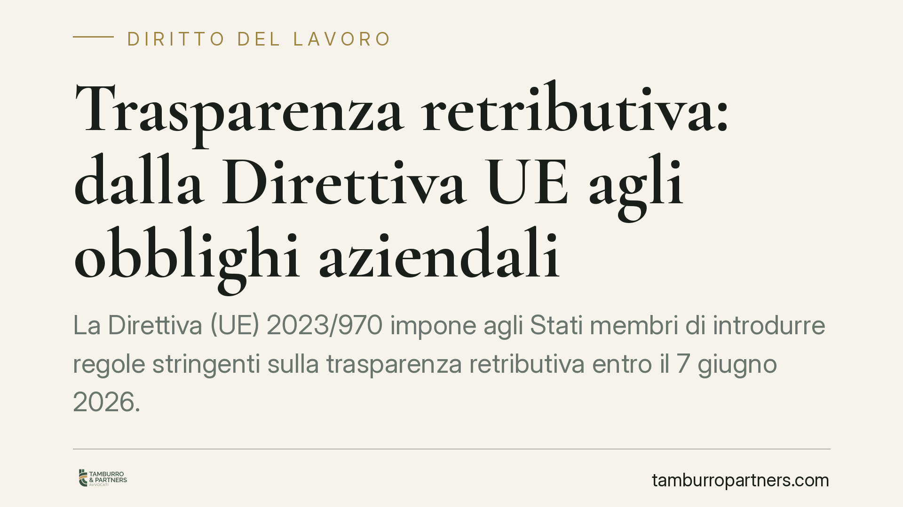

Trasparenza retributiva: dalla Direttiva UE agli obblighi aziendali
La Direttiva (UE) 2023/970 impone agli Stati membri di introdurre regole stringenti sulla trasparenza retributiva entro il 7 giugno 2026. Cambia l'impianto della selezione e della gestione del personale: divieto di chiedere lo stipendio pregresso, obbligo di indicare la fascia salariale, reporting sul gender pay gap e inversione dell'onere della prova nel contenzioso. Le aziende devono prepararsi per tempo.

Il quadro normativo
La Direttiva (UE) 2023/970, adottata il 10 maggio 2023, rafforza l'applicazione del principio di parità retributiva tra donne e uomini a parità di lavoro o di lavoro di pari valore. Il termine entro cui gli Stati membri devono recepirla nei rispettivi ordinamenti è fissato al 7 giugno 2026 (art. 34 della Direttiva).
Alla data di redazione, il decreto legislativo italiano di recepimento è in fase di definizione. Occorre quindi distinguere due piani: l'entrata in vigore della Direttiva, già avvenuta, e l'operatività degli obblighi interni, che dipenderà dal testo nazionale di attuazione e dalle sue decorrenze. Invitiamo a verificare gli estremi definitivi del provvedimento una volta pubblicato in Gazzetta Ufficiale: su questo punto nessuna anticipazione può considerarsi consolidata.
Che cosa introduce la Direttiva
Due sono gli obblighi che incidono già in fase di selezione.
Il primo è il divieto di chiedere al candidato la retribuzione pregressa o la sua storia retributiva. È una misura che mira a interrompere la trasmissione dei divari salariali da un rapporto di lavoro al successivo.
Il secondo è l'obbligo di comunicare la fascia retributiva iniziale, o il relativo intervallo, prima del colloquio o comunque in modo da consentire una trattativa informata. Si tratta di due previsioni distinte: una vieta una domanda, l'altra impone un'informazione. Vanno gestite come adempimenti separati.
Sul fronte del monitoraggio, la Direttiva prevede obblighi di reporting sul gender pay gap con soglie dimensionali e decorrenze scaglionate. In sintesi:
- datori con almeno 250 dipendenti: primo report entro il 7 giugno 2027, poi con cadenza annuale;
- datori tra 150 e 249 dipendenti: primo report entro il 7 giugno 2027, poi ogni tre anni;
- datori tra 100 e 149 dipendenti: primo report entro il 7 giugno 2031, poi ogni tre anni.
Sotto i 100 dipendenti l'obbligo non scatta in via generale, salvo diversa scelta del legislatore nazionale. Quando il divario medio di retribuzione per categoria di lavoratori supera il 5% e non è giustificato da criteri oggettivi e neutri, è prevista una valutazione congiunta con i rappresentanti dei lavoratori.
Il profilo che incide di più sul rischio: onere della prova e sanzioni
L'elemento destinato a ridisegnare il contenzioso è l'inversione dell'onere della prova. Quando il lavoratore fornisce elementi che lasciano presumere una discriminazione retributiva, spetta al datore dimostrare che non vi è stata violazione del principio di parità. Chi non dispone di una classificazione trasparente e documentata delle posizioni parte in condizione di svantaggio processuale.
La Direttiva impone inoltre agli Stati di prevedere sanzioni effettive, proporzionate e dissuasive e il pieno risarcimento del danno, compreso il recupero delle retribuzioni arretrate. Il mancato rispetto degli obblighi di trasparenza non è quindi un'irregolarità formale, ma un fattore che amplifica l'esposizione economica in caso di causa.
Implicazioni pratiche
Il passaggio chiave è da una parità dichiarata a una parità verificabile. Non basta affermare di retribuire in modo equo: occorre poterlo dimostrare con criteri oggettivi di valutazione delle mansioni, progressione e benefit.
Per le imprese multinazionali il tema si intreccia con le policy di gruppo. Le griglie retributive globali e i processi di recruiting centralizzati vanno coordinati con i vincoli nazionali di recepimento, che possono divergere da Stato a Stato. Un modello unico non calibrato sul diritto locale rischia di generare non conformità diffuse.
Cosa fare in concreto
- Mappare le posizioni con criteri oggettivi e neutri sotto il profilo di genere, definendo cosa costituisce "lavoro di pari valore" all'interno dell'organizzazione.
- Rivedere i processi di selezione: eliminare la richiesta della retribuzione pregressa negli annunci, nei form e nei colloqui, e predisporre le fasce retributive da comunicare ai candidati.
- Condurre un'analisi preliminare del gender pay gap, individuando per tempo divari superiori al 5% privi di giustificazione oggettiva.
- Allineare le policy di gruppo al quadro di recepimento nazionale, verificando la compatibilità delle griglie retributive globali.
- Archiviare la documentazione a supporto delle scelte retributive, in vista dell'inversione dell'onere probatorio in giudizio.
Disclaimer
Contributo informativo a cura di Tamburro & Partners - Avv. Giuseppe Tamburro. Non costituisce parere legale.
Ogni storia di lavoro ha i suoi tempi.
Se gestisci HR e vuoi un confronto su contenzioso, ispezioni o licenziamenti, scrivi allo studio. Ti rispondiamo entro un giorno lavorativo.